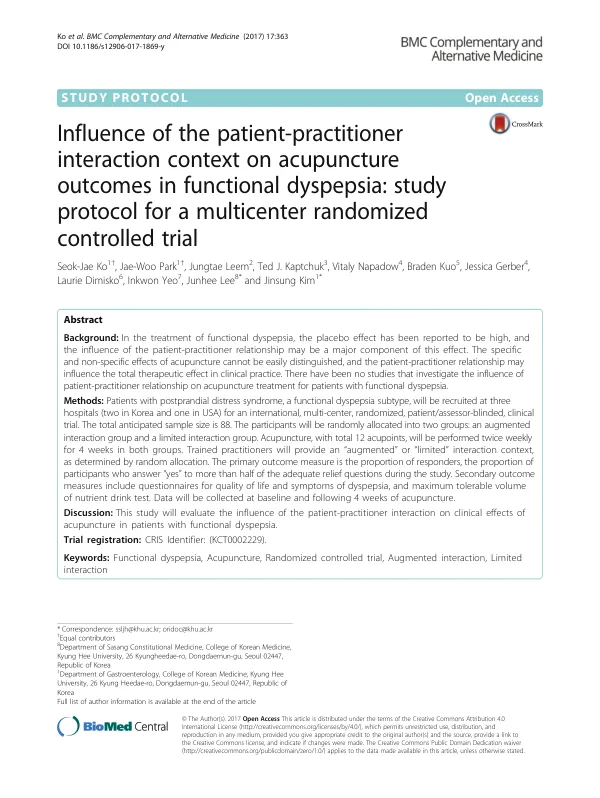

Influence of the patient-practitioner interaction context on acupuncture outcomes in functional dyspepsia: study protocol for a multicenter randomized controlled trial
Ko SJ, Park JW, Leem J, Kaptchuk TJ, Napadow V, Kuo B, Gerber J, Dimisko L, Yeo I, Lee J, Kim J
BMC Complementary and Alternative Medicine 17(1):363

첫 장 · 오픈액세스First page · open access
논문 소개Summary
침의 효과 가운데 시술자가 환자를 대하는 방식이 차지하는 몫을 재려는 무작위 대조시험의 프로토콜입니다. 기능성 소화불량에서는 위약효과가 크고 그중 상당 부분이 환자와 시술자의 관계에서 온다고 알려져 있습니다. 한국 두 곳과 미국 한 곳에서 식후 불편 증후군 환자 88명을 강화군과 제한군에 44명씩 나눕니다. 침은 12개 혈에 주 2회씩 4주로 두 군이 똑같고, 다른 것은 진료의 맥락뿐입니다. 강화군에서는 전인적 평가와 함께 온정과 공감, 경청, 긍정적 기대, 진맥과 설진 같은 접촉이 더해지고, 제한군에서는 진맥과 복진을 하지 않으며 감정이나 의미를 묻지 않고 사무적으로 대합니다. 프로토콜이라 결과는 없습니다.
A protocol for a randomised controlled trial designed to measure how much of acupuncture's effect comes from the way the practitioner relates to the patient. In functional dyspepsia the placebo effect is large, and a substantial part of it is understood to arise from the patient-practitioner relationship. At two hospitals in Korea and one in the United States, 88 patients with postprandial distress syndrome will be allocated 44 each to an augmented or a limited interaction group. The acupuncture itself is identical — 12 points, twice weekly for four weeks — and only the consultation context differs. The augmented group receives a holistic assessment together with warmth, empathic attention, attentive listening, positive expectation and therapeutic touch such as pulse and tongue examination; in the limited group there is no pulse or abdominal examination, no enquiry into emotion or meaning, and a matter-of-fact manner throughout. As a protocol it reports no results.
인용Cite
Ko SJ, Park JW, Leem J, Kaptchuk TJ, Napadow V, Kuo B, Gerber J, Dimisko L, Yeo I, Lee J, Kim J. Influence of the patient-practitioner interaction context on acupuncture outcomes in functional dyspepsia: study protocol for a multicenter randomized controlled trial. BMC Complementary and Alternative Medicine. 2017;17(1):363. doi:10.1186/s12906-017-1869-y